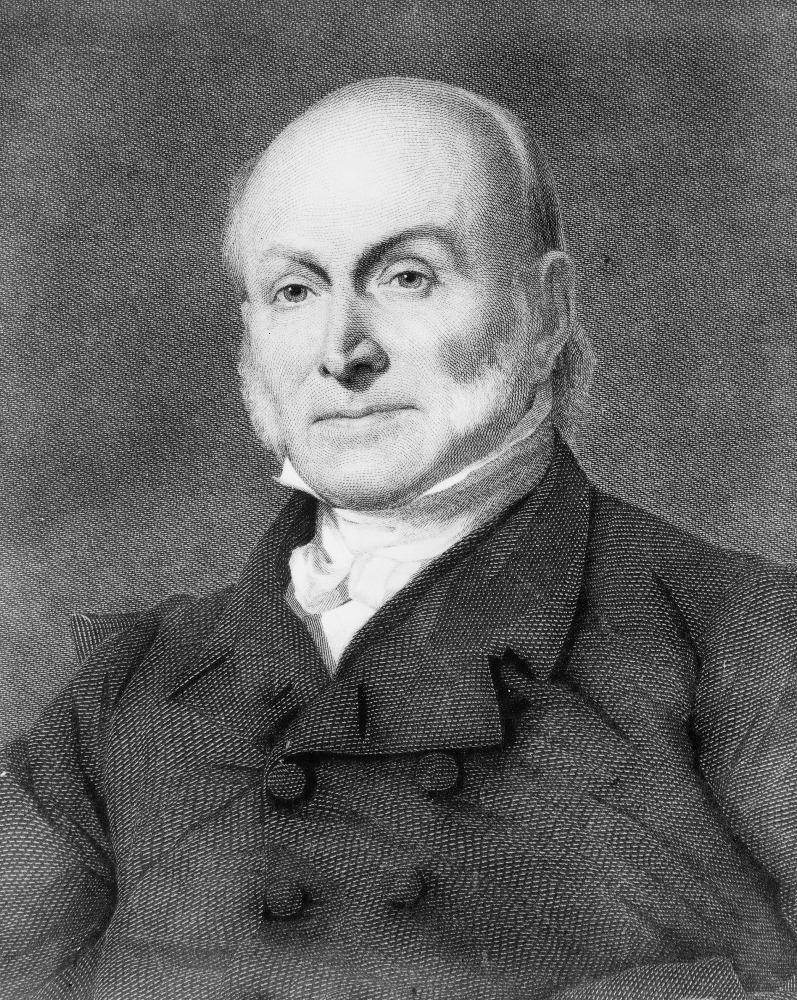

John A. Doe
Objective:
Dynamic and results-oriented professional seeking a challenging position in a forward-thinking company where I can leverage my skills and expertise to contribute to organizational success.
Education:
Master of Business Administration (MBA)
XYZ University, Anytown, USA
Graduation Date: May 2020
Bachelor of Science in Computer Science
ABC College, Cityville, USA
Graduation Date: May 2017
Work Experience:
- Senior Business Analyst
Tech Solutions Inc., Cityville, USA
June 2020 - Present
- Conduct market research and analysis to identify business opportunities.
Collaborate with cross-functional teams to streamline business processes and improve efficiency.
Develop and implement data-driven strategies for business growth.
- Software Developer
InnovateTech, Anytown, USA
July 2017 - May 2020
- Designed and developed scalable software solutions, reducing processing time by 20%.
Collaborated with clients to understand requirements and deliver customized software solutions.
Conducted code reviews and provided technical guidance to junior developers.
Skills
View Awards